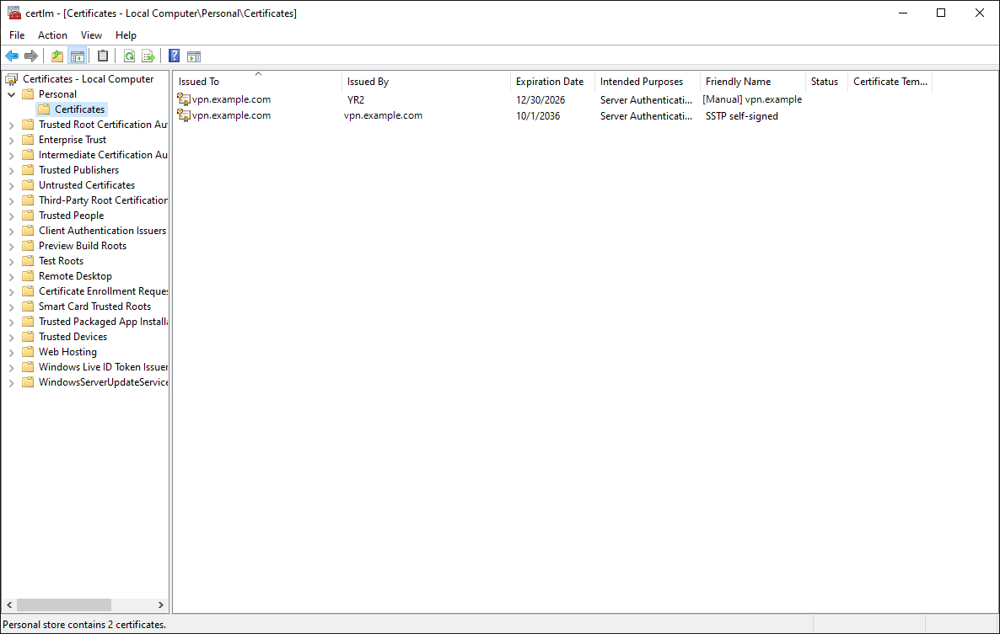
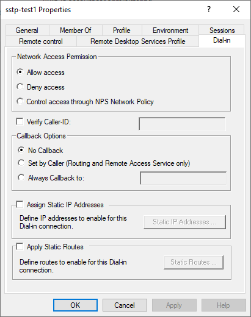
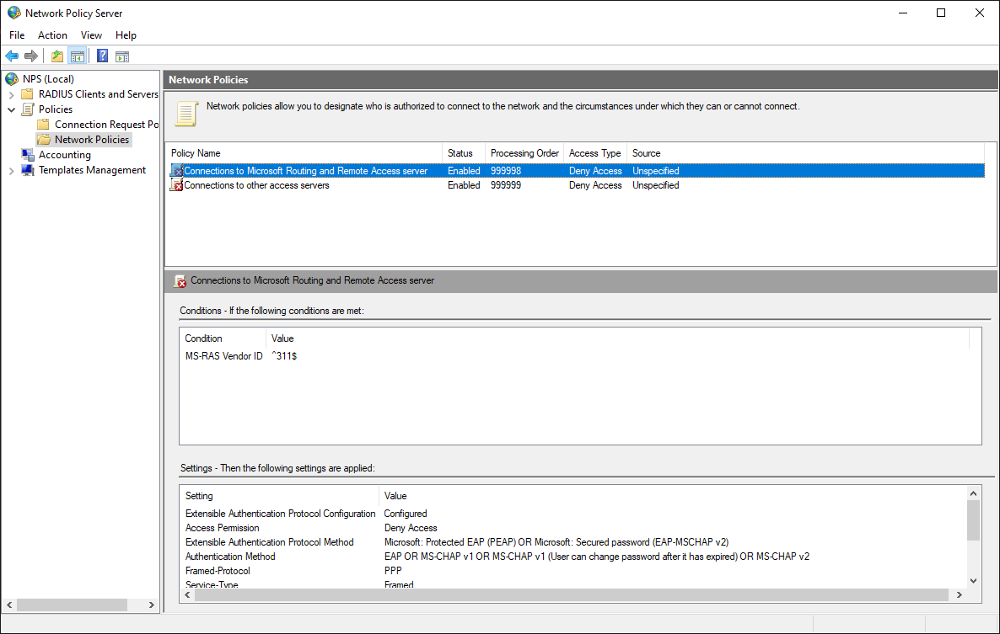
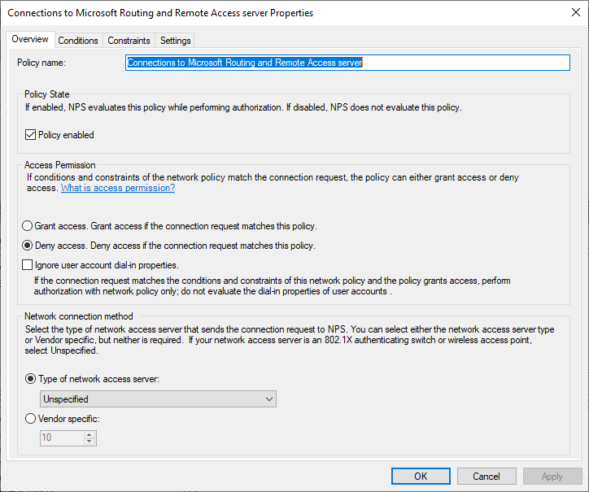
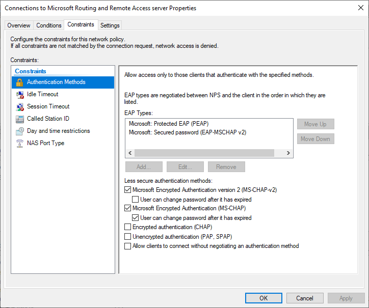
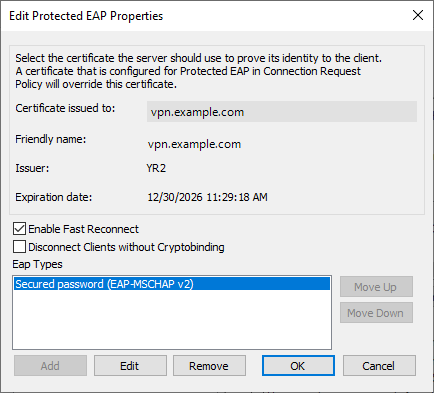

Windows Server
This page sets up an SSTP server on Windows Server 2019, 2022 or 2025 with Routing and Remote Access (RRAS), the way our three test servers are set up, and connects the app to it. RRAS is set up from PowerShell; the certificate, the users and the EAP settings are shown in the Windows consoles.
On 6 November 2026 we removed the VPN configuration of our Windows Server 2019 test server and set it up again with the commands in steps 3 to 6, then tested the app against it on an iPhone and an Android phone. The screenshots are from our Windows Server 2022 test server, set up the same way with Network Policy Server, and the Windows Server 2025 section was read from that server on the same day. The results are in Test results. Host names and addresses in the screenshots are replaced with vpn.example.com and 203.0.113.10.
What you need
- Windows Server 2019, 2022 or 2025 with a public IPv4 address. Each of our servers is a virtual machine with one network adapter.
- A DNS name for the server, for example
vpn.example.com, whose A record points to the server's public address. The app checks the server's certificate against this name. - TCP port 443 open to the server for SSTP, and TCP port 80 while Let's Encrypt issues and renews the certificate.
- PowerShell started with Run as administrator.
In the commands, replace the parts in angle brackets: <SERVER_HOST> is the server's DNS name, <PUBLIC_ADAPTER> the name of the network adapter that faces the internet (Get-NetAdapter lists them; ours are called Ethernet0 on Windows Server 2019 and Ethernet0 2 on 2022 and 2025), <THUMBPRINT> the certificate's thumbprint.
1. Install the roles
SSTP is part of the Remote Access role. Network Policy Server gives the console in which step 7 sets up EAP and PEAP; skip it if MS-CHAPv2 is enough.
Install-WindowsFeature RemoteAccess, DirectAccess-VPN, Routing -IncludeManagementTools
Install-WindowsFeature NPAS -IncludeManagementToolsOn our Windows Server 2019, where Network Policy Server is not installed, Windows reports for the second command that the server may need a restart afterwards. The first command installs the Routing and Remote Access console and the RemoteAccess PowerShell module used below; the second installs the Network Policy Server console.
2. Get a certificate
SSTP runs inside TLS, so the server needs a certificate for its name in the computer's Personal certificate store. Our servers use Let's Encrypt certificates that win-acme 2.2.9 issued. In win-acme we entered the host name by hand, let win-acme answer Let's Encrypt's HTTP check itself on port 80, and stored the certificate in the Windows certificate store. win-acme adds a scheduled task, win-acme renew (acme-v02.api.letsencrypt.org), that renews it.

certlm.msc): the Let's Encrypt certificate that SSTP uses, issued by Let's Encrypt's intermediate YR2, and a self-signed certificate we keep for tests.Find the certificate's thumbprint for step 5:
Get-ChildItem Cert:\LocalMachine\My | Format-Table Thumbprint, Subject, Issuer, NotAfterA certificate from another authority works the same way once it is in the Personal store with its private key. With a certificate the phone does not trust, such as a self-signed one, the app warns before every connection unless Allow Untrusted Certificate is on in the profile; see the certificate warning.
3. Turn on the VPN server
Install-RemoteAccess -VpnType Vpn -IPAddressRange "10.79.0.1", "10.79.0.254"
Set-VpnAuthProtocol -UserAuthProtocolAccepted MsChapv2, EAPThe first command sets up RRAS as a VPN server that hands out addresses from 10.79.0.1 to 10.79.0.254. The server keeps the first one for itself: on our server the phone got 10.79.0.2 and the server was 10.79.0.1. As DNS servers, RRAS gives the phones the DNS servers of the server's own network adapter. The second command lets RRAS accept MS-CHAPv2 and EAP only; PAP, CHAP and MS-CHAPv1 stay off.
On our server Install-RemoteAccess also turned on the PPTP and L2TP ports of RRAS, 128 of each. This guide needs only SSTP, so turn them off again:
netsh ras set wanports device="WAN Miniport (PPTP)" rasinonly=disabled ddinout=disabled ddoutonly=disabled maxports=1
netsh ras set wanports device="WAN Miniport (L2TP)" rasinonly=disabled ddinout=disabled ddoutonly=disabled maxports=0
Restart-Service RemoteAccess -ForceRRAS does not accept 0 ports for PPTP, so one PPTP port stays, with no use set. The SSTP ports are not touched: RRAS has 128 of them, one for each connected phone.
On our Windows Server 2019, Install-RemoteAccess also turned on the inbound firewall rules Routing and Remote Access (PPTP-In), (L2TP-In) and (GRE-In) (rule names RRAS-PPTP-In-TCP, RRAS-L2TP-In-UDP, RRAS-GRE-In). SSTP needs only Secure Socket Tunneling Protocol (SSTP-In), so turn those three off in Windows Defender Firewall with Advanced Security unless you use PPTP or L2TP.
4. Let the clients reach the internet
The phones' traffic leaves the server with the server's own address through RRAS's NAT. Internal is RRAS's own interface on the VPN side.
netsh routing ip nat install
netsh routing ip nat add interface name="<PUBLIC_ADAPTER>" mode=full
netsh routing ip nat add interface name="Internal" mode=privatenetsh routing ip nat show interfaceOur server prints the public adapter with the mode Address and Port Translation and Internal with the mode Private Interface.
5. Give SSTP the certificate
$cert = Get-Item Cert:\LocalMachine\My\<THUMBPRINT>
Stop-Service RemoteAccess -Force
Set-RemoteAccess -SslCertificate $cert
Start-Service RemoteAccess(Get-RemoteAccess).SslCertificate | Format-List Subject, Issuer, NotAfter, ThumbprintIt must show the certificate from step 2. From another computer, openssl s_client -connect <SERVER_HOST>:443 -servername <SERVER_HOST> shows the same certificate.
RRAS keeps the certificate with the thumbprint it was given, and PEAP (step 7) the one chosen in its settings. A renewed certificate has a new thumbprint, so give it to SSTP and PEAP again after each renewal. win-acme can run a script after every issue and renewal; ours runs one that does this.
6. Users
Our servers use local Windows accounts. Each account needs the dial-in permission Allow access.
$password = Read-Host -AsSecureString "Password"
New-LocalUser -Name "vpnuser" -Password $password -PasswordNeverExpires
netsh ras set user name=vpnuser dialin=permitThe same permission is on the Dial-in tab of the user in Local Users and Groups (lusrmgr.msc).

netsh ras show user name=vpnuser shows the same setting as Dialin: permit.7. EAP and PEAP (optional)
With step 3, the app connects with MS-CHAPv2, its default. For EAP-MSCHAPv2 and PEAP, the network policy that RRAS uses must allow those EAP types. Open Network Policy Server (nps.msc), go to Policies > Network Policies and open Connections to Microsoft Routing and Remote Access server.

On the Overview tab, our policy keeps Windows' default Deny access, with Ignore user account dial-in properties off. The user's dial-in permission from step 6 decides then, and the policy's other settings, such as its EAP types, still apply.

On the Constraints tab, under Authentication Methods, click Add and add Microsoft: Protected EAP (PEAP) and Microsoft: Secured password (EAP-MSCHAP v2).

Select Microsoft: Protected EAP (PEAP) and click Edit. Choose the certificate from step 2 in Certificate issued to; PEAP runs a TLS session inside the VPN login, and the app checks this certificate too. The EAP type inside PEAP is Secured password (EAP-MSCHAP v2). Click OK in both windows.

On our server Disconnect Clients without Cryptobinding is off. Network Policy Server sends PEAP's crypto binding anyway, so a profile with Require Crypto Binding on connects too.
Our Network Policy Servers refused EAP-TTLS and TEAP, and they have no TLS 1.3 inside EAP: when the app offers TLS 1.3 for PEAP, the server ends the exchange and the app tries again with TLS 1.2 by itself. For EAP-TTLS and certificate login, see Windows Server 2025 with FreeRADIUS below.
Windows Server 2025 with FreeRADIUS
RRAS can send the logins to a RADIUS server instead of checking them against Windows accounts. Our Windows Server 2025 sends them to the FreeRADIUS server described in FreeRADIUS, which adds EAP-TTLS and certificate login (EAP-TLS) and keeps one user list for all our servers. Steps 1 to 5 are the same on it, with its own address range 10.80.0.1 to 10.80.0.254; users and EAP settings live on the RADIUS server, so steps 6 and 7 do not apply.
Set-VpnAuthType -Type ExternalRadius -RadiusServer <RADIUS_IP> -SharedSecret <RADIUS_SECRET>
Restart-Service RemoteAccessOn the RADIUS server, the Windows server must be a client with the same secret. Get-RemoteAccessRadius on our server shows the RADIUS server with port 1812, a timeout of 5 seconds and the purpose Authentication.
Check the server
Get-RemoteAccess | Format-List VpnStatus, AuthenticationType, IPAddressRangeList, SslCertificate
Get-VpnAuthProtocol
Get-NetFirewallRule -DisplayName "Secure Socket Tunneling Protocol (SSTP-In)" | Format-Table DisplayName, Enabled, ActionOn our servers VpnStatus is Installed, AuthenticationType is Windows on 2019 and 2022 and ExternalRadius on 2025, and the firewall rule Secure Socket Tunneling Protocol (SSTP-In), which RRAS turns on, allows TCP 443. RRAS logs refused logins in the System event log under the source RemoteAccess (events 20255 and 20269, which name the user and the reason); Network Policy Server's own decisions are Security events 6272 to 6274.
8. Set up the app on the phone
Install SRP VPN Connect first, on iPhone or on Android. An SSTP profile has the same fields on both, so the steps below are the same, except for the permission the first connection asks for.
Create the profile
- On the home screen, tap +, tap Protocol and choose SSTP VPN.
- Description: optional, the profile's name on the home screen. When it is empty, the home screen shows the server's name or address.
- Host: the server's DNS name,
<SERVER_HOST>, which the certificate from step 2 is for. Use the name, not the IP address: the app checks the certificate against Host. - Port:
443, which the firewall rule Secure Socket Tunneling Protocol (SSTP-In) allows (Check the server). An empty Port means 443 too. - Allow Untrusted Certificate: leave it off. For a certificate the phone does not trust, see step 2.
- Method: Password, the default.
- Username:
vpnuser, the account you made in step 6. Password: the password you typed for it there. - Leave Enable MS-CHAPv2 on and Enable PAP / CHAP (Less Secure) off: after step 3, RRAS accepts MS-CHAPv2 and EAP only.
- Leave everything under Proxy and Options as it is, and tap Save.


To log in with EAP-MSCHAPv2 or PEAP, which step 7 sets up, change the authentication before you tap Save:
- Turn off Enable MS-CHAPv2, so that the profile offers EAP only: the app offers every method that is on, and the server picks one.
- Tap EAP Configuration and turn on Enable EAP-MSCHAPv2 or Enable PEAP. With PEAP, Require Crypto Binding may be on: Network Policy Server sends PEAP's crypto binding.
- Make sure Enable Identity Privacy is off: RRAS with local accounts refuses its outer identity
anonymous. - Leave Enable TLS 1.3 as it is. Network Policy Server has no TLS 1.3 inside EAP, and the app tries again with TLS 1.2 by itself.
On a server set up as in Windows Server 2025 with FreeRADIUS, the users and the EAP methods are those of the FreeRADIUS server:
- Username and Password: a user of the FreeRADIUS server (FreeRADIUS, step 3), such as
vpnuserwith its<PASSWORD>. - With Enable MS-CHAPv2 off, EAP-MSCHAPv2, PEAP and EAP-TTLS (EAP-TTLS Method set to PAP, CHAP, EAP or MSCHAPv2) work; PEAP also with Enable Identity Privacy on. Require Crypto Binding must be off: PEAP from FreeRADIUS sends no crypto binding.
- For certificate login, turn off Enable MS-CHAPv2, set Method to Certificate, tap Certificate, then Import, and choose the .p12 or .pfx file that holds your client certificate and its private key; the app asks for the file's passphrase. Username is optional. The certificate must chain to the CA in FreeRADIUS's
ca_file(FreeRADIUS, step 5).
Connect
- On the home screen, select the profile and tap the power button.
- The first time, the system asks for permission: iOS asks whether the app may add a VPN configuration, and Android shows a Connection request. Allow it.
- The status changes to Connected once the server has assigned the phone an address, and the profile's row shows the time of one request through the tunnel.
Tap the status under the power button to open the log. It shows the addresses the server gave, among them the phone's address from the range of step 3 (on our server 10.79.0.2). If the app shows Connection Failed instead, Troubleshooting explains its reason, and RRAS logs the refused login with the user and the reason in the server's System event log, under the source RemoteAccess (Check the server).
Setting up the app describes every field.
Remove the VPN configuration
Uninstall-RemoteAccess -VpnType Vpn -Force
netsh routing ip nat delete interface name="<PUBLIC_ADAPTER>"
netsh routing ip nat delete interface name="Internal"
netsh routing ip nat uninstallUninstall-RemoteAccess alone left the NAT settings of step 4 in place on our server, so the last three commands remove them.
About the Routing and Remote Access console
On our servers the Routing and Remote Access console could not show the server's settings, so this page uses PowerShell for RRAS. The reason is the Remote Access Connection Manager service (RasMan); see Troubleshooting.